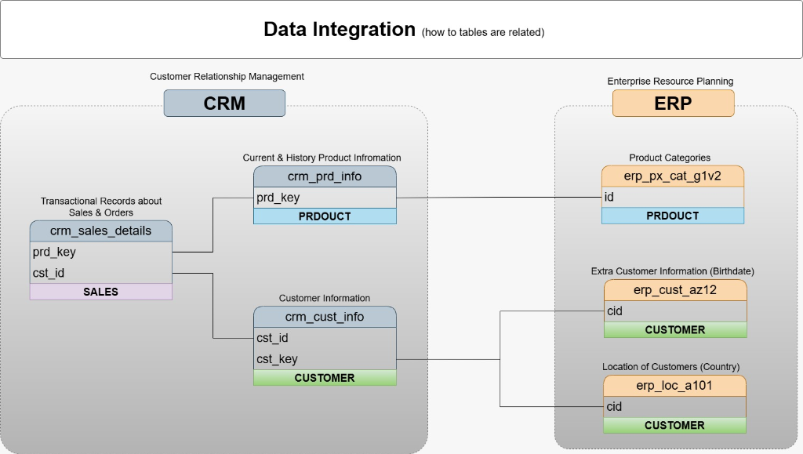
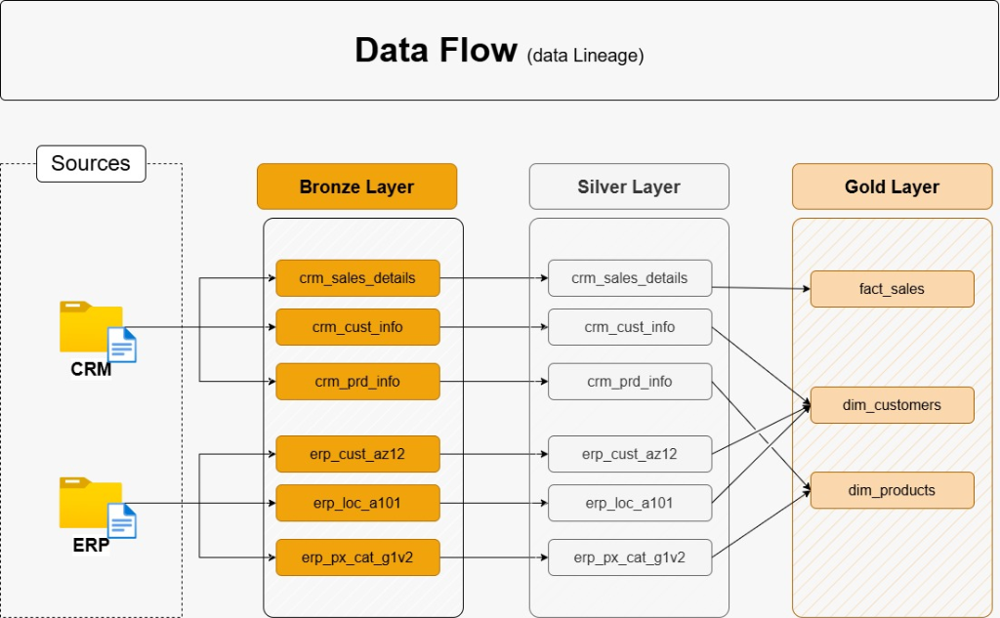
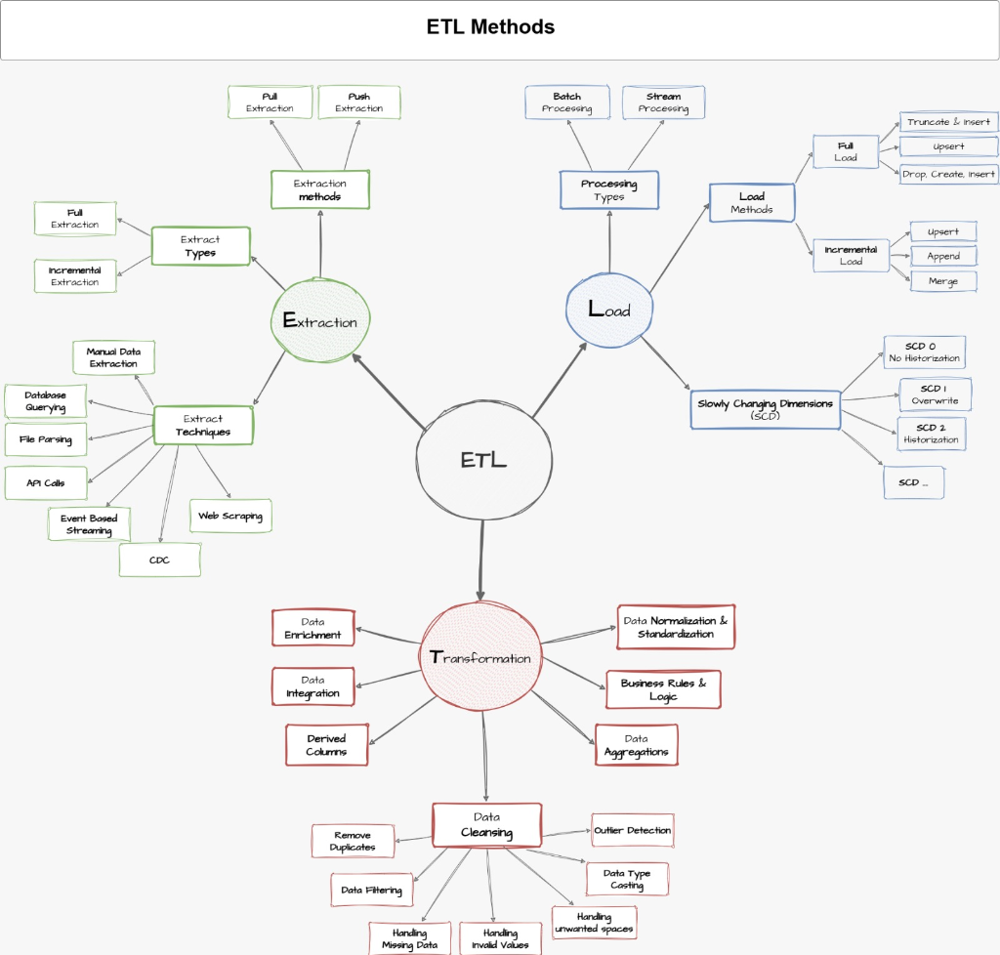
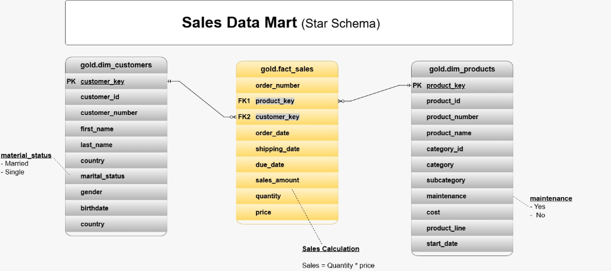

End-to-End Data Warehouse & ETL Pipeline
A multi-layered data warehouse architecture implemented in SQL Server, transforming raw CRM and ERP data into an analytics-ready Star Schema using Medallion Architecture (Bronze → Silver → Gold).
Project Overview
This project is an end-to-end Data Warehouse implemented in SQL Server. The primary objective is to transform raw operational data from CRM and ERP systems into structured, cleaned, and analytics-ready data using a Medallion Architecture (Bronze → Silver → Gold).
By separating concerns across progressive storage tiers, the architecture ensures data integrity, auditability, and optimal query performance for reporting and analytical consumption.
Problem Statement
Operational data originated from disparate CRM and ERP systems, presenting several structural and quality challenges that prevented effective business analytics:
- Scattered source data: Information was fragmented across multiple disconnected source files without a unified storage layer.
- Inconsistent records: Variations in customer codes, naming formats, and regional values between CRM and ERP extracts.
- Duplicate entries: Repeated transactional records caused by application retries that could skew reporting metrics.
- Inconsistent formats: Discrepant date representations, unstandardized categorical labels, and mismatched numeric types.
- Missing relationships between entities: Absence of foreign keys or direct mapping between sales orders and product/customer details.
- Raw structures not suitable for analytics: Operational transactional formats that were difficult, slow, and computationally inefficient to query directly.
Data Sources & Integration
CRM + ERP → Data Warehouse: The project integrates raw operational data from CRM and ERP source files into a centralized data warehouse pipeline.
The CRM system provides transactional sales records and customer account information, while the ERP system provides product catalog hierarchies, customer demographic details, and geographical mapping data. Integrating these sources establishes a single source of truth across all operations.

Data Architecture
The warehouse is structured around a three-tier Medallion Architecture in SQL Server, providing a clean separation between raw ingestion, standardized data, and analytical models:
- Bronze — Raw: Raw source data is loaded while preserving the original source structure and values as-is, ensuring a reliable audit trail.
- Silver — Cleaned & Transformed: Data is cleaned, standardized, deduplicated, validated, and transformed using SQL/T-SQL and stored procedures.
- Gold — Analytics-Ready: Cleaned data is organized into Fact and Dimension tables using a Star Schema optimized for reporting and analytical queries.

Data Flow
Data moves sequentially through the pipeline following a transparent lineage from inception to analytical delivery:

ETL Process
The ETL pipeline follows a disciplined four-stage workflow implemented directly in SQL Server:
- Extract: Collect raw CRM and ERP source data files from operational storage.
- Load (Bronze): Load the raw data into the Bronze layer tables with minimal overhead, maintaining source schema fidelity.
- Transform (Silver): Clean, standardize, validate, deduplicate, and transform the data using modular T-SQL stored procedures.
- Model (Gold): Build the Gold-layer dimensional model by populating Conformed Dimension tables and Fact tables with integer surrogate keys.

Data Quality & Transformation
Data transformations are performed systematically within the Silver layer to guarantee consistency, accuracy, and reliability before data enters the analytical layer:
- Data Cleansing: Trimming unwanted whitespaces, standardizing null representations, and removing corrupted strings.
- Data Standardization: Harmonizing inconsistent categorical codes (such as country names, gender flags, and product line codes).
- Deduplication: Identifying and eliminating duplicate transaction records using window functions (e.g.,
ROW_NUMBER()partitions). - Data Type Conversion: Casting raw string representations into appropriate relational types (integers, decimals, and dates).
- Validation: Enforcing non-null constraints, logical date sequences, and valid numeric range checks.
- Referential Integrity: Ensuring foreign key relationships align consistently between customer, product, and sales entities.
- Stored Procedures: Encapsulating all ETL and cleaning steps in repeatable, modular T-SQL stored procedures with transaction management.
- SQL/T-SQL Transformations: Generating calculated business metrics, derived attributes, and standardized business flags.
Data Modeling
The Gold layer is organized into a Star Schema dimensional model specifically designed for fast, intuitive analytical querying:
- Fact Tables: Centralized table (
gold.fact_sales) containing transactional measurements, order numbers, dates, quantities, unit prices, and calculated sales amounts. - Dimension Tables: Conformed dimensions (
gold.dim_customers,gold.dim_products) providing rich descriptive context for filtering, grouping, and slicing metrics. - Relationships: One-to-many relationships connecting dimension primary keys to foreign keys within the central fact table.
- Surrogate Keys: Generated integer surrogate keys (
customer_key,product_key) that decouple the data warehouse from changes in operational source keys. - Star Schema: Simple, de-normalized structure that minimizes table joins and maximizes query efficiency.
- Analytical Reporting Structure: Prepared business-ready views enabling self-service ad-hoc SQL queries and BI reporting.

Technology Stack
This project strictly utilizes the following core data engineering technologies:
Engineering Approach
The architecture reflects several key engineering principles essential for scalable, dependable data systems:
- Layered Architecture: Strict progression from Bronze to Silver to Gold ensures data can always be audited back to source inputs.
- Data Transformation: Business logic and cleaning transformations are centralized within maintainable database stored procedures.
- Data Quality: Automated data validation assertions catch anomalies early in the pipeline before they affect reports.
- Structured Data Modeling: Standard dimensional modeling techniques guarantee straightforward query construction for non-technical stakeholders.
- Maintainability: Modular scripts and repeatable ETL patterns ensure the pipeline can be extended with new source files easily.
- Clear Separation: Strict boundaries between raw staging, sanitized data, and analytical views keep operational dependencies isolated.
Project Outcome
The project produces a structured and maintainable SQL Server Data Warehouse that transforms raw CRM and ERP data into cleaned, modeled, and analytics-ready data through a Bronze → Silver → Gold pipeline.
Explore the Source Code
All DDL schema definitions, T-SQL ETL stored procedures, dimensional modeling queries, and documentation are available in the public GitHub repository.
View the Project on GitHub